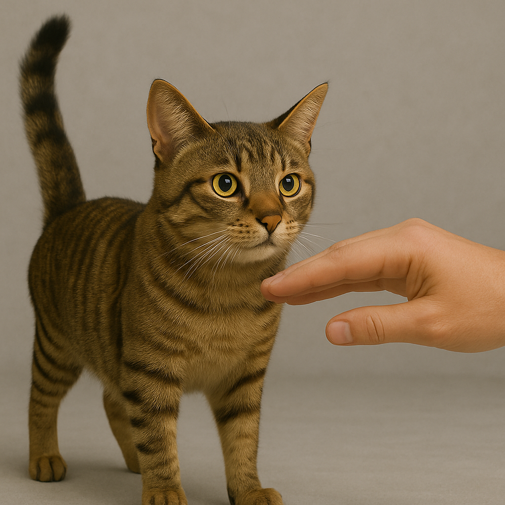

Knowledge Check #1
Home
Petting Primer
Observe
Listen
Knowledge Check #1
Knowledge Check #2
What Body Language Shows That a Cat Wants to Be Petted?
Click on one of the following choices
Fur is Raised
Tail is Wrapped Around Body
Tail is Up, Ears are Forward
Ears are Back
